Google Tasks
Bringing flexible organization to Google Tasks
Google Tasks is the simplest task app Google makes — and the first one people outgrow. This project asked how it could hold more of real life without losing the lightness that makes people reach for it in the first place.
The answer wasn't more features. It was organization that bends to the day you're having, built entirely from patterns Google users already know. Over seven weeks I ran interviews, competitor and app audits, and two rounds of testing to design a way to group, sort, and move tasks that feels discovered rather than learned.
See the PresentationProblem Space
People capture tasks in Tasks quickly, but the app offers almost no way to organize them afterward.
Sorting is limited, lists don't talk to each other, and there's no way to see the same tasks a different way on a different day.
I ran four user interviews, audited two competitors and four Google apps, and tested two prototype rounds with five participants — designing a flexible sorting and organizational system that feels native to Google.
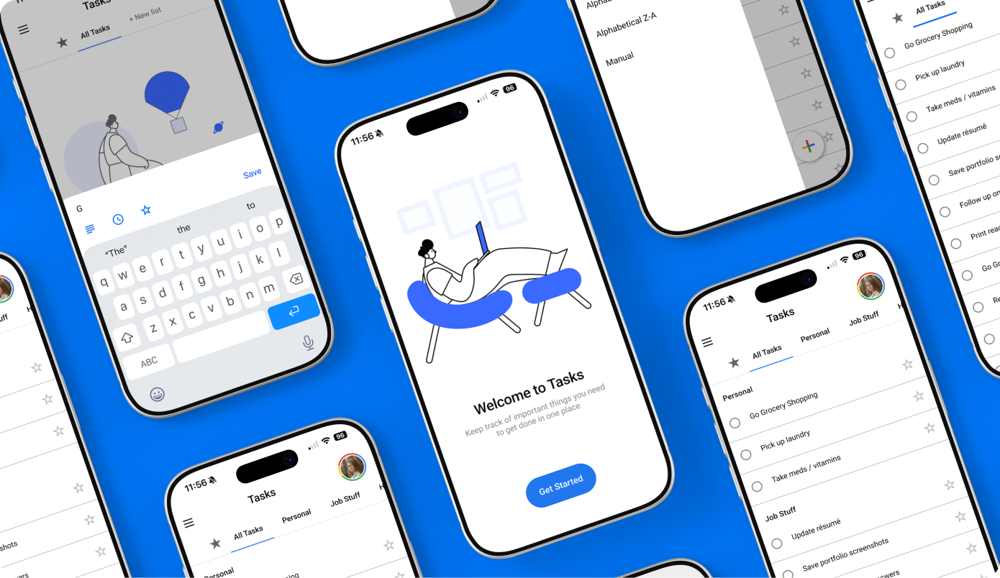
Solution
Instead of an overhaul, I introduced small, meaningful changes that kept the user at the forefront.
Google Tasks doesn't need more features. It needs the ones it has to be findable, flexible, and consistent with the rest of the Google ecosystem.
Rather than adding tags, projects, or a new taxonomy users would have to learn, I borrowed patterns they already knew: a top-left menu, a bottom-right "+", and a sort panel that behaves like Gmail's. Familiar structure, expanded capability.
The core change is that organization became a lens, not a commitment. Users can sort by date, list, or creation time — switching views without ever restructuring the tasks underneath.
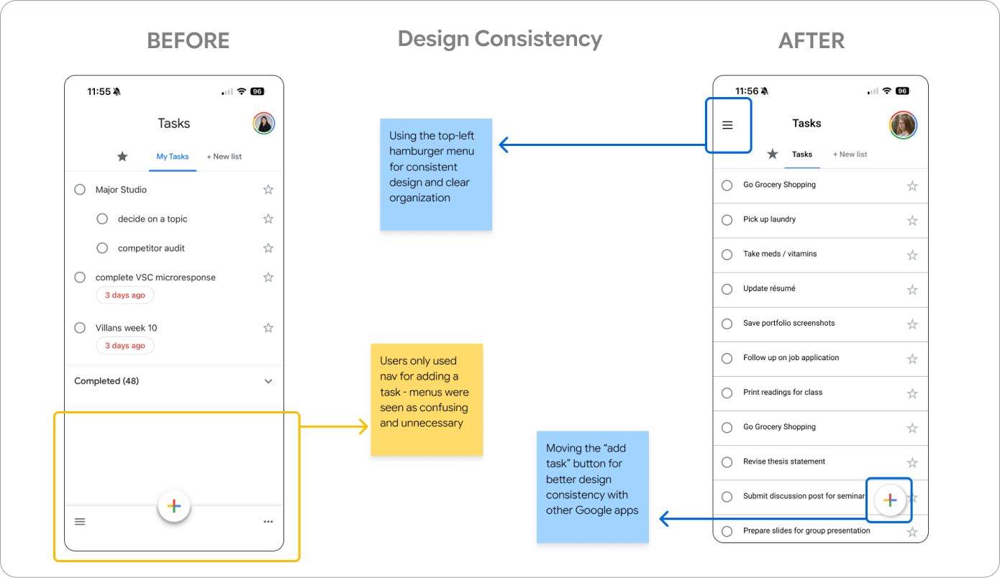
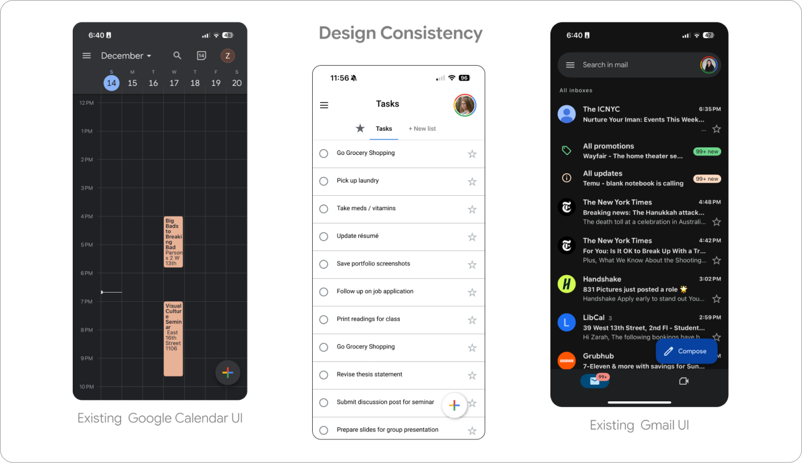
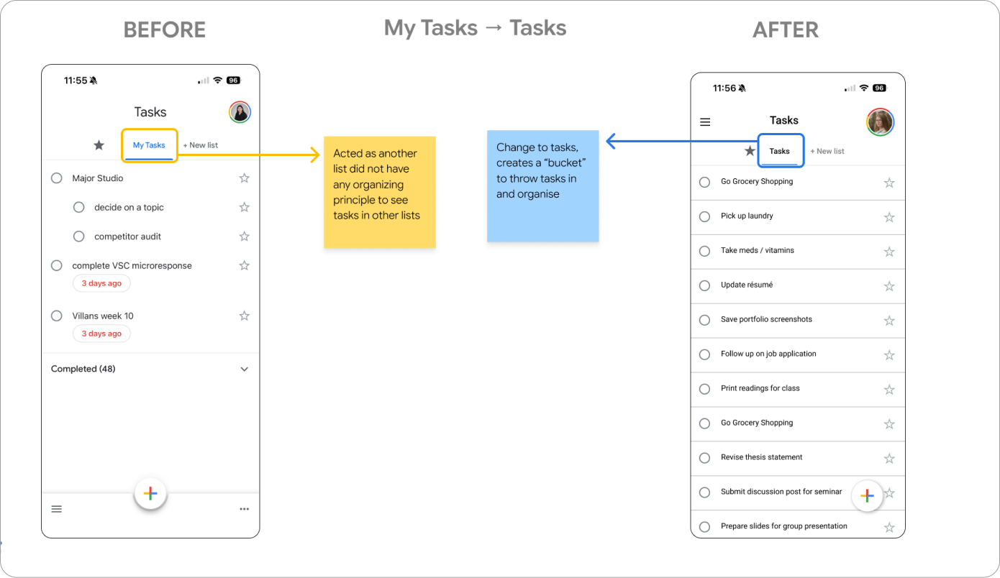
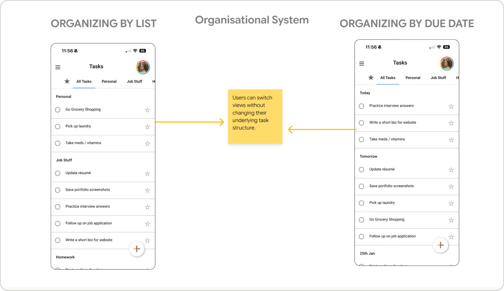
Design Documentation
Beyond the screens, I documented the interaction behaviors — such as:
- Moving a Task from one list to another
- Swiping to complete a task
Process
What I needed to know
How do people actually organize their to-dos? Where does Google Tasks stop being useful? And what makes an organizational feature feel native to Google rather than bolted on?
I conducted two stages of user interviews, a competitor audit and employed secondary research to better understand the problem.
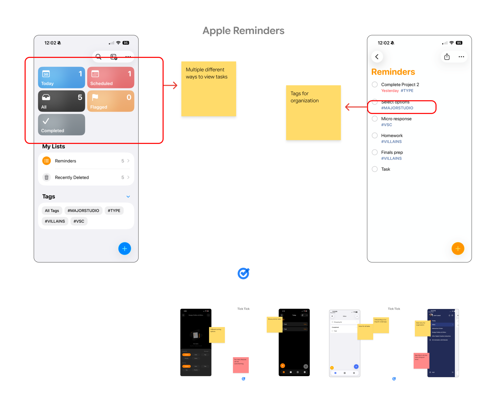
Interviews
I interviewed four people aged 22–25 across Google Tasks, Notion, and Apple Reminders — students and early professionals juggling coursework and work tasks. I wanted to understand not just what they clicked, but where the app stopped and their brain took over.
Key Findings
Users rely on apps to capture tasks quickly.
Prioritization and planning happens mentally, outside the app.
No participant felt the app actively helped them decide what to do next.
Competitor Audit
I also audited two apps to see how each solved for organization:
Apple Reminders: offers multiple views and tags, but buries them. Powerful, hidden, confusing.
TickTick: offers extensive grouping and sorting, but front-loads it — long onboarding, too many features at once, overwhelming.
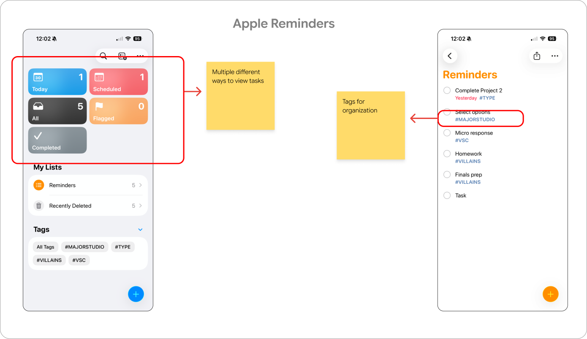
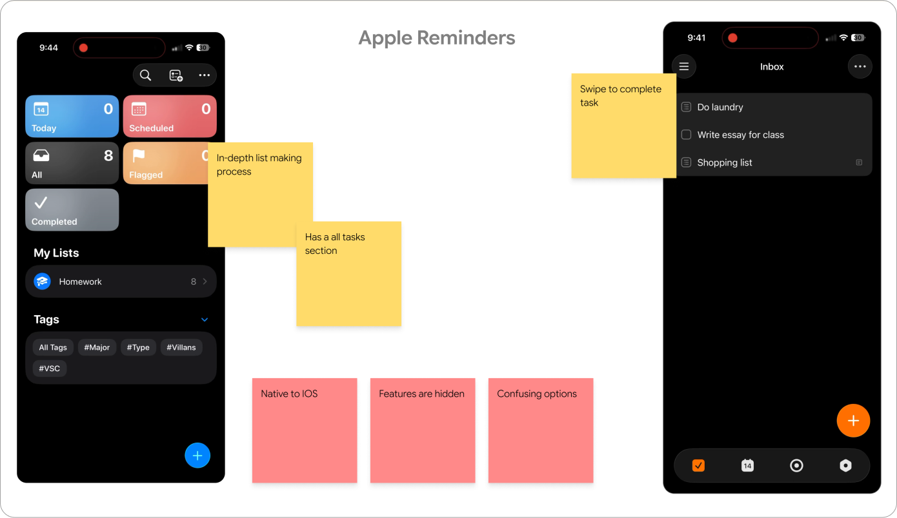
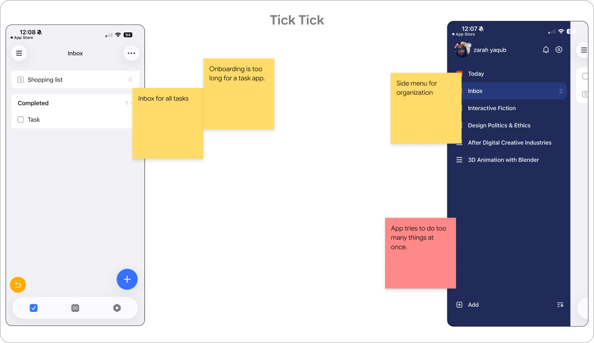
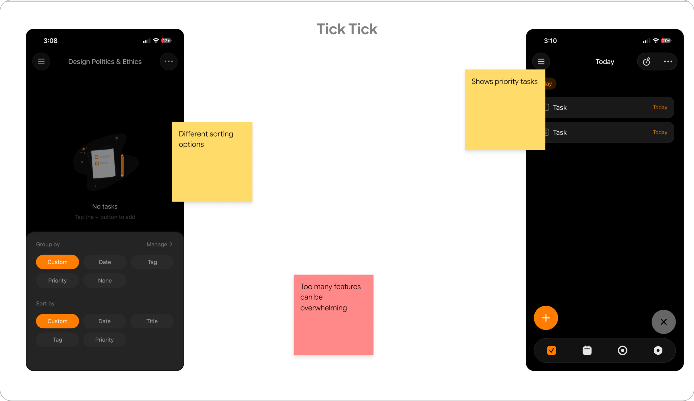
Ideation & Testing
My first direction put organization in onboarding: ask users up front how they wanted their tasks structured, then build the app around that answer. It seemed efficient. It failed immediately.
Organization can't be a one-time decision. It has to be an ongoing, low-friction action — and it has to live somewhere users already know to look.
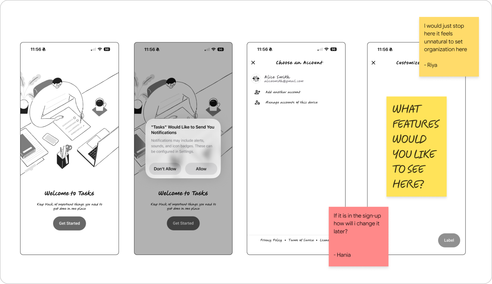
Auditing Existing Apps
If the feature needed to feel native, I needed to know what "native" meant. I audited Gmail, Google Calendar, and Google Keep and found consistent patterns.
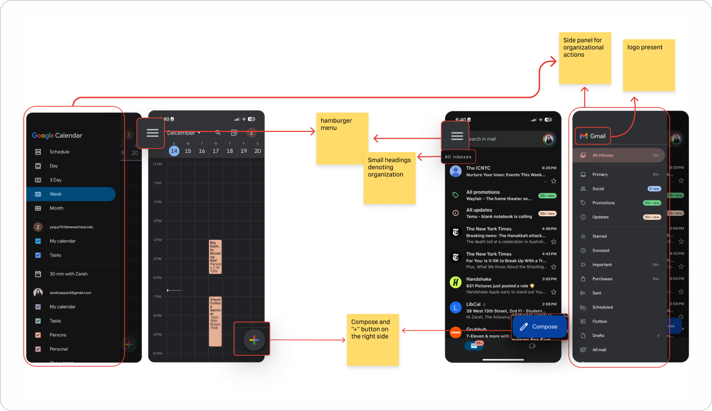
Testing
I tested the revised sort menu with two participants outside my original demographic — Aisha (29, mother, Reminders + Siri) and Shazia (56, working professional, Google Keep) — to check whether the pattern held for people who weren't students. I asked them what sorting options they'd actually want, rather than validating a list I'd already written.
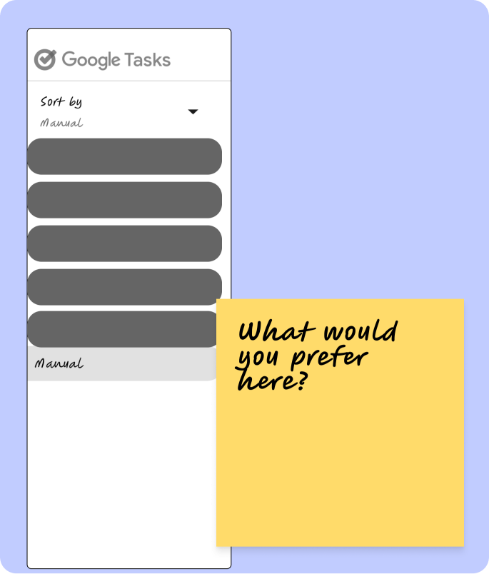
Reflection
Consistency turned out to be a feature, not a constraint. I first treated "make it look like Google" as a restriction — until auditing Gmail, Calendar, and Keep flipped it. The existing pattern was free discoverability. Users already knew where to look; Tasks just wasn't putting anything there. My most useful decision was my least original one.
I also designed a setting when I should have designed a behavior. Asking users to configure their organization up front is tidy, and wrong. Organization isn't a decision made once — it's something people redo constantly, differently, without much thought.
Next time, I'd audit the design system before wireframing rather than spending a testing round to learn my screens didn't feel like Google.